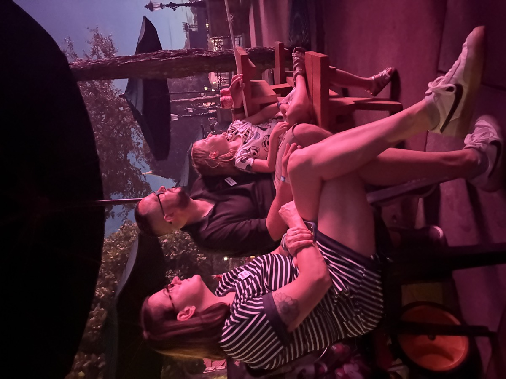

On March 6, 2026, my grandson Avery Dees rang the bell at Children’s Hospital in St. Louis, marking the official end of his treatment after more than a two-year battle against B-ALL, b-cell acute lymphoblastic leukemia.

Throughout those turbulent years, local partners supported Avery’s family — including Friends of Kids with Cancer, a St. Louis–based nonprofit. Through this organization’s generosity, my daughter’s family was able to step outside the illness for a while: tickets to local attractions, nights out at St. Louis Blues and Cardinals games. So when my daughter told me that Avery would be eligible to become a “Wish Kid,” it felt like one more kindness offered to us in the middle of this unfathomable hurdle we had been scaling as a family.
At first, it sounded like Avery might go to Disney World in Orlando at some point — but the trip was at least a year away. Holding that future in their hearts, the family went on with the quieter work of healing from the wounds cancer leaves behind.
That was, until one day in May, when my phone rang.
“Mom,” my daughter said, “we got offered a trip with Kurt Warner to Disney — but we have to go June 13th through the 20th. This year.”
And that is where the story begins…
Once it was established that I would be invited to come along — as long as I paid my own airfare and park tickets — I became much more personally invested in this adventure. For many people, that would mean shopping for Disney outfits, ordering matching T-shirts, and making packing lists.
For me, it meant investigation.
In my worldview, gifts create relationships, and this one smelled a lot like “charity” from my vantage. If someone was going to invest this much time and money in my family, and I was tagging along, I wanted to know something about them.
Living in St. Louis, I wasn’t starting from zero. Like most people here, I knew who Kurt Warner was. I knew he had quarterbacked the Rams. I knew Brenda Warner’s name. I knew they had become something of a St. Louis institution before eventually settling in Arizona. I thought they had quite a few kids and that they were Christians.
Unlike many St. Louisans, I am not a sports fan. The fact that I knew Kurt Warner was a testament to his greatness, or at least his ubiquity, as I both knew his name and could picture his face. I had absorbed the cultural version of the Warners simply by living in the Midwest, but almost everything I “knew” about them was more, “Was he on Dancing with the Stars?” and “Do they still give out coats in St. Louis?” rather than any real concept of the Warner family or its goals.
Then there was Brenda Warner — who I knew even less about. I knew she had a reputation as outspoken from both a personality and fashion sense, and I knew that she was profoundly Christian. For some, this would be a sense of comfort. As a former Southern Baptist with both an appreciation and wariness of others’ belief structures, I needed more information to feel like I could accept this generosity authentically.
So I did what I always do.
I started reading.
“First Things First. I have to give praise and glory to my Lord and Savior up above. Thank you, Jesus.” — Kurt Warner, post-game interview, Super Bowl XXXIV
Beginning with the website, I learned about First Things First and their mission which is based on Matthew 6:33 from the Bible: “But seek first his kingdom and his righteousness, and all these things will be given to you as well.” This seemed like — if nothing else — a consistent message as I had seen clips of him after winning the Superbowl where the phrase “First Things First” originated officially as a Warner slogan. Also, his family worked to forefront its faith, so it tracked that the organization they started together would also be focused in this way. As I read, I realized that this organization began by foregrounding the needs of medically complex kids and their families, and that it had been going on for over twenty years.
That last part caught my attention.
Wait, it’s now 2026? That’s twenty-four years. We were going on this trip in its twenty-fourth year.
How had I lived in St. Louis all this time without ever hearing about these Disney trips?
As a researcher, from a systems perspective, that didn’t make immediate sense to me. Organizations that survive for twenty-four years don’t usually do so by accident. Organizations that quietly give away weeklong Disney vacations certainly don’t. If good things had been happening in my own community — or at least the Midwest — for nearly a quarter of a century, why had they escaped my notice?
With the evidence piling up in the consistency-over-time category, I read First Things First: The Rules of Being a Warner, Kurt and Brenda’s book about family and parenting from 2009. In general, it seemed like a common-sense approach to managing a large family with a wide variety of needs. In this case, the Warners also use their spirituality as a North Star for guidance and comfort. As a grandmother and educational researcher, I appreciated their approach and found it grounded echoes of research-based practice.
Right before we left, I picked up Brenda Warner’s 2011 book One Call Away, where I learned of Brenda’s life before Kurt and how they worked to build a family together in spite of tragedy. After that I became what I will lovingly refer to as a “Brenda Warner Fan Girl for Life.” However, with a PhD in education and the baked-in cynicism of a middle-aged Midwesterner, I reserved too much adoration until I was in-person. I mean it IS the Show-Me State, and nothing is for free, right? But Momma also said, “For free? Take.” She was always a practical lady, so I tucked in my Missouri-born wisdom — using some publicly available data for triangulation — and got to packing.
With my initial concerns cleared enough that I could attend this trip with authenticity and gratitude, early on the morning of June 13, 2026, I headed for the airport and onto the adventure of a lifetime.